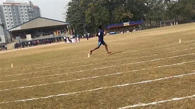

The National Service Scheme (NSS) is an Indian government-sponsored flagship for public service program conducted by the Ministry of Youth Affairs and Sports of the Government of India. Popularly known as NSS, the scheme was launched in Gandhiji's Centenary year in 1969. Since the inception of NSS by the Indian Government, a unit of National Service Scheme was started in our institution. NSS is a voluntary association of young people in colleges, universities and at +2 level working for a campus-community linkage, aimed at developing student’s personality through community service. We work with a main motto of “NOT ME, BUT YOU”. NSS at NIT, Durgapur is currently being supervised/coordinated by Dr.Shri Krishan Rai. We observe many important events celebrated by Government of India like Independence Day, Republic day, Swachchta Pakhwada, Vigilance awareness week, National Education day, Hindi Pakhwada, Matribhasha diwas etc., Our volunteers participate in the Parade that takes place in our college during Independence Day, Republic Day and Sports day every year. In order to create awareness, our volunteers even conduct some rallies, quizzes, essay writing competitions etc., on National Education Day, Vigilance awareness week etc. Also as a part of Matribhasha diwas we organise a major event containing cultural performances by students from various parts of our country and also a food fest where students from different regions cook and sell some famous dishes of their regions. Apart from the above events we do make some camps at nearby villages. This includes Annual Medical Camp (in which we organise basic medical facilities for two or three days in a nearby village), Plastic Free Village and Water Conservation Campaign (in which we explained people in a nearby village about ill effects of Plastic on earth, importance of water conservation and distributed Jute bags), Plantation campaign within the campus.
A unit of National Cadet Corps )NCC) Army wing was started in this Institution since 2012 as open vacancy among UG students (Boys & Girls) under the supervision of 10 Bengal Bn, NCC, Asansol. The cadets have participated regular training programme including attend camps, appearing ‘B’ ‘C’ Certificate examination and actiively involve in several extension activities like Independence Day celebration, Republic Day celebration, NCC Day celebration etc. This wing also observed and participated various important days like environment Day, Voters Day organized rallies, Swachchta programme, tree plantation etc. Beside above mentioned activities this wing undertake compulsory co-curricular credit courses (XXS-51 & XXS-52) for first two semester. Mr. Hillol Mukherjee, Physical Training Instructor & I/C Student Activity Centre has supervised the NCC Activities as Company Commander of this Unit.
The Department of Physical Training is exist right from the inception of REC Durgapur. From the formative years the Department was an independent entity. For games & sports administration as well as academic convenience, the activities are guided by Departmental Academic Committee (DAC) & Athletic Committee respectively. From January 2017 the department renamed as “Student Activity Centre” (SAC) and treated as Central Facilities of the Institute.

The Institute houses several clubs and student bodies ranging from cultural, technical, environmental etc. The clubs organise workshops, fests and events all year around and witness huge participation.
CCA, Centre for Cognitive Activities, is the focal point where convergence of all technical and scientific endeavours of the students materialises. As the technical gymkhana of the institute, this club is the revolution which bridges the gap between knowledge and application. Bulk of the extracurricular activities held in the college all the year round are organised by the CCA , with the objective of probing the dark recesses of human mind so that the grey cells are stimulated to create , conceptualise and evolve, triggering a rebellion of the new age mind against baseless conventions and meek acceptance.
Dance Club is the official dance club of Nitdgp. We not only perform in Independence Day, Republic Day and other college fests but also participate in inter college fests like spring fest(iitkgp) and carpe diem(iim Calcutta) and have brought medals for our college. We believe in diversity hence we support and perform all dance forms. And as we say “we work hard and party harder”.
Entrepreneurship Development Cell of NIT Durgapur formerly known as NEN NIT Durgapur Students Chapter is the one and only independent cell of the institute, of national importance, inculcating an entrepreneurial environmental across the campus. To promote potential innovative startups from our college so that the students with their technical and entrepreneurial knowledge and skill will help India become the Innovation hub of the world.
We the People of Prakriti- The Environmental Club of NIT Durgapur, strive to make a difference and inculcate the seed of awareness and action in the minds of prospective engineers to make this environment a sustainable place for every living being. Our motto is to change the notion that Engineers do not care for environment into making every individual on campus, a GreenEngineer, who minimizes the risk of pollution that might be caused with new inventions or breakthrough researches in technology.
The Student affiliated chapter of The Indian Institute of Metals was passed through council Meeting No: 342/III/2019-20 on Saturday,22nd November 2020 held at Kaladham Conference Hall, Vidyanagar in presence of president, Dr. U Kamachi Mudali [2019-20 Council Year] and other council members as per Point 6b resolution.
We are the official Music Club of NIT Durgapur. We bring the love we have for music to everyone in this college through live performances and the people outside the college through our page and YouTube channel. We perform both Eastern and Western genres of music.
A group of enthusiasts with a dream to “enrich the quality of formal education by increasing awareness about different aspects of Indian heritage and inspiring the young mind to imbibe the values embedded in it.” SPIC MACAY NIT Durgapur Chapter is the biggest cultural club in NIT Durgapur and embraces the beauty and wisdom that is ingrained in the Indian art forms. With a zeal to further the purview of Indian classical music and dance, folk, traditional paintings crafts, SPIC MACAY NIT Durgapur Chapter has been a quintessential part of the college aesthetics since its inception.
Strokes is the official art and photography club of NIT Durgapur. It is among the youngest clubs of NIT Durgapur and is one of its kind. Founded in 2015 by a bunch of enthusiasts then second year, it aims at patronizing the sense of creativity among the students of NIT Durgapur. We organize KALAKRITI (The Annual art and photography exhibition), PHOTO WALKS, WORKSHOPS and many more events throughout the year. We also beautify our college campus with wall paintings and cover each and every event organised in the college premises.